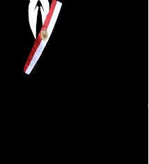

En el marco de las Elecciones Generales 2026 en Perú, el término "misión" se refiere tanto al propósito del sistema electoral como al trabajo de las misiones internacionales que vigilan el proceso.
1. Misión del Sistema Electoral Peruano
Los tres organismos que integran el sistema electoral tienen misiones complementarias para asegurar la democracia:
2. Misiones de Observación Electoral (MOE)
La misión general de estas elecciones es facilitar la transferencia pacífica del poder y fortalecer la democracia.